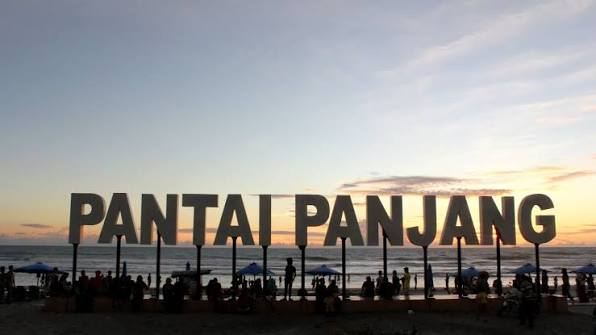
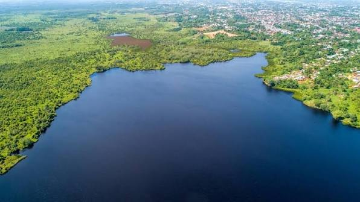
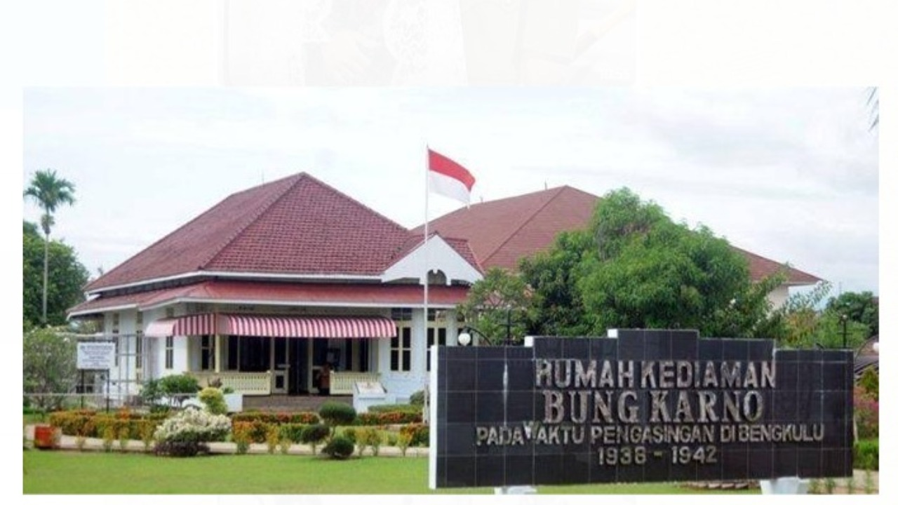
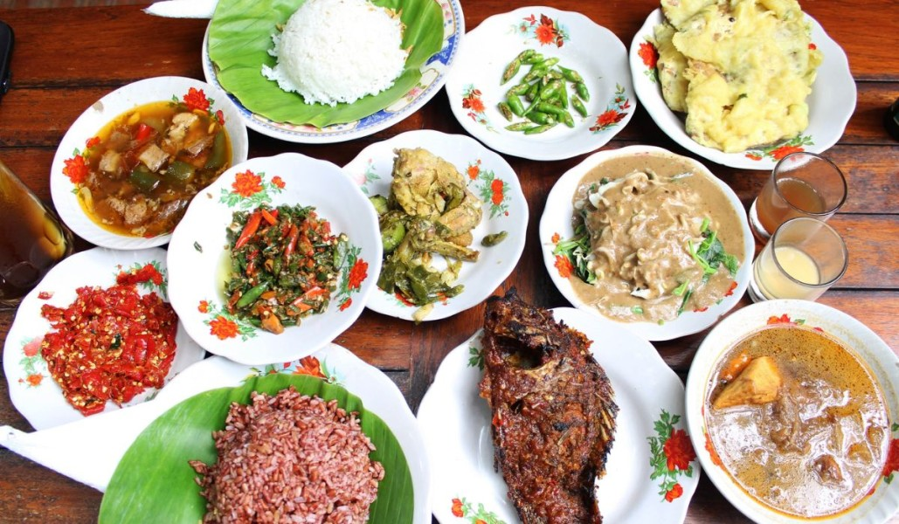

Wisata Bengkulu
Dari hutan tropis yang menyimpan keajaiban botani hingga pantai barat yang membentang luas.

AlamPantai Panjang
Pantai landai sepanjang ±7 km dengan pasir putih bersih dan deretan pohon cemara laut. Cocok untuk bersantai dan menikmati sunset.
 Sejarah
Sejarah
Benteng Marlborough
Benteng peninggalan Inggris (1714) yang menjadi saksi bisu sejarah kolonialisme di Sumatera. Kini menjadi cagar budaya nasional.
Taman Nasional Kerinci Seblat
Kawasan hutan hujan tropis yang menjadi rumah bagi Rafflesia Arnoldii, Harimau Sumatera, dan ribuan spesies endemik.

DanauDanau Dendam Tak Sudah
Danau eksotis dengan nama legendaris yang merupakan habitat tanaman teratai langka Victoria Amazonica dan berbagai spesies burung.

SejarahRumah Pengasingan Bung Karno
Rumah bersejarah tempat Presiden Pertama RI, Ir. Soekarno, diasingkan oleh pemerintah kolonial Belanda (1938–1942).

KulinerKuliner Khas Bengkulu
Nikmati Pendap (ikan masak daun talas), Kue Perut Punai, Bay Tat, dan berbagai hidangan khas Bengkulu yang kaya rempah.